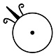
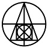
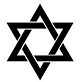

Símbolos
- 
- 
- 

-
Ouro
O ouro, sendo o mais perfeito dos metais, simboliza perfeição. Enquanto isso, o metal comum representa o nível mais baixo a partir do qual tem início o processo de purificação.
-
Pedra Filosofal
Ela, uma substância lendária, significa pureza e imortalidade. Seu símbolo é composto pelo triângulo, que representa o sal, o enxofre e o mercúrio, bem como o quadrado, que representa os quatro elementos.
-
Caduceu
O poder de transformar o impuro em puro é representado pelo caduceu, especificamente o bastão, enquanto as asas representam o equilíbrio desse processo.
-
Selo de Salomão
Junção dos símbolos que representam o fogo e a água, o selo de Salomão simboliza a união dos opostos e o resultado da transformação dos processos alquímicos.
-
Ar
associado ao ferro, o terceiro elemento representa o sopro da vida. A águia, outro símbolo presente na alquimia, também representa esse elemento.